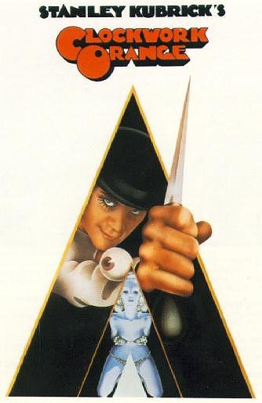

Summary:
In futuristic London, Alex (Malcolm McDowell) is the leader of his "droogs", Pete (Michael Tarn), Georgie (James Marcus), and Dim
(Warren Clarke), one of many youth gangs in the decaying metropolis. One night, after intoxicating themselves on "milk plus", they engage in
an evening of "ultra-violence", including beating an elderly vagrant (Paul Farrell) and fighting a rival gang led by Billyboy
(Richard Connaught). Stealing a car, they drive to the country home of writer F. Alexander (Patrick Magee), where they beat Mr. Alexander
to the point of crippling him for life. Alex then rapes his wife (Adrienne Corri) while intoning "Singin' in the Rain".
The next day, while truant from school, Alex is approached by probation officer Mr. P. R. Deltoid (Aubrey Morris), who is aware of
Alex's violence and cautions him. In response, Alex visits a record store where he picks up two girls. Alex and the girls have sex in
a fast-motion scene.
After the events of the night before, his droogs express discontent with Alex's petty crimes, demanding more equality and more high-yield
thefts. Alex reasserts his leadership by attacking them and throwing them into a canal. That night, Alex invades the mansion of a wealthy
"cat"-woman (Miriam Karlin), filled with erotic art. While his droogs remain at the front door, Alex bludgeons the woman with a phallic
statue. At the climax of the attack, close-ups of the erotic paintings on the walls are barely visible in single-frame sequences. Hearing
police sirens, Alex tries to run away, but is betrayed by his droogs. Dim smashes a pint bottle of milk across his face, leaving him stunned
and bleeding. Alex is captured and brutally beaten by the police. A gloating Deltoid spits in his face and informs him that the woman
subsequently died in the hospital, making him a murderer. Alex is sentenced to 14 years� incarceration.
Two years into the sentence, the Minister of the Interior (Anthony Sharp) arrives at the prison looking for test subjects for the Ludovico
technique, an experimental aversion therapy for rehabilitating criminals within two weeks; Alex readily volunteers. The process involves
drugging the subject, strapping him to a chair, propping his eyelids open, and forcing him to watch violent movies. Alex, initially pleased
by the violent images he sees, becomes nauseated due to the drugs. He realizes that one of the films' soundtracks is by his favourite composer,
Ludwig van Beethoven, and that the Ludovico technique will make him sick when he hears the music he loves. He tries unsuccessfully to end the
treatment.
After two weeks of the Ludovico technique, the Minister of the Interior puts on a demonstration to prove that Alex is "cured". He is shown
to be incapable of fighting back against an actor (John Clive) who insults and attacks him, and he becomes violently ill at the sight of a
topless woman (Virginia Wetherell). Though the prison chaplain (Godfrey Quigley) protests at the results, saying that "there's no morality
without choice", the prison governor (Michael Gover) asserts that they are not interested in the moral questions but only "the means to
prevent violence".
Alex is released and finds that his possessions have been confiscated by the police to help make restitution to his victims, and that his
parents have rented out his room. Homeless, Alex encounters the same elderly vagrant from before, who attacks him with several other friends.
Alex is saved by two policemen but is shocked to discover they are two of his former droogs, Dim and Georgie. They drag Alex to the
countryside, where they beat and nearly drown him. The dazed Alex wanders the countryside before coming to the home of Mr. Alexander, and
collapses. Alex wakes up to find himself being treated by Mr. Alexander and his manservant, Julian (David Prowse). Mr. Alexander does not
recognize Alex as his attacker, but has read about his treatment in the newspapers. Seeing Alex as a political weapon to usurp the government,
Mr. Alexander intends to expose the Ludovico technique as a step toward totalitarianism by way of mind control. As Mr. Alexander prepares to
introduce Alex to colleagues (John Savident and Margaret Tyzack), he hears Alex singing "Singin' in the Rain" in the bath, and the memories
of the earlier assault return. With his colleagues' help, Mr. Alexander drugs Alex and places him in a locked upstairs bedroom, playing
Beethoven's Ninth Symphony through the floor below. Alex, in excruciating pain, throws himself from the window and is knocked unconscious
by the fall.
Alex wakes up in a hospital, having dreamt about doctors messing around inside his head. While being given a series of psychological tests,
Alex finds that he no longer has an aversion to violence. The Minister of the Interior arrives and apologizes to Alex, letting him know that
Mr. Alexander has been "put away". He offers to take care of Alex and get him a job in return for cooperation with his PR counter-offensive.
As a sign of goodwill, the Minister brings in a stereo system playing Beethoven's Ninth Symphony. Alex then realizes that, instead of an
adverse reaction to the music, he sees an image of himself having sex in the snow with a woman in front of an approving crowd dressed in
Beethoven-era fashion. He then states, in a sarcastic and menacing voice-over, "I was cured, all right!"
|
Poster:

|